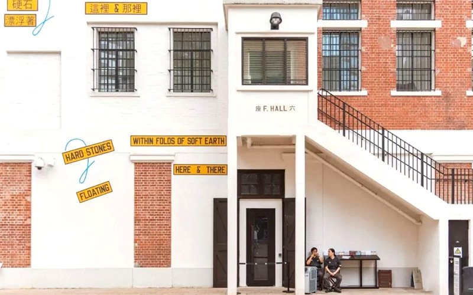

WKCD | 西九文化區
The West Kowloon Cultural District (WKCD) is a vibrant arts and cultural hub located along the iconic Victoria Harbour in Hong Kong. Designed to be a world-class destination for the arts, the district spans approximately 40 hectares and is home to a wide array of art exhibitions that celebrate creativity and cultural exchange.
M+ Museum
M+ is Asia's first global museum of contemporary visual culture, focusing on 20th and 21st-century art, design, architecture, and moving images. It houses over 6,000 works from Hong Kong, Asia, and beyond, including paintings, installations, and digital media. Visitor can experience guided tours, educational programs, and special exhibitions, making it a dynamic space for art lovers.Hong Kong Palace Museum
Opened in 2022, the Hong Kong Palace Museum showcases a vast collection of Chinese art and cultural relics, enhancing appreciation for Chinese heritage. It features rotating exhibitions, many of which are borrowed from the Palace Museum in Beijing, covering topics from imperial history to traditional crafts. The building itself is a modern interpretation of traditional Chinese architecture, providing a stunning backdrop for the exhibits.Art Park
The Art Park is a beautifully landscaped area offering open spaces for art installations, performances, and community events. It includes gardens, performance venues, and walking paths, providing a serene environment for relaxation and cultural engagement. The park also regularly hosts festivals, outdoor performances, and art workshops, making it a lively gathering place for locals and tourists alike.
TAI KWUN | 大館

Tai Kwun, located in the heart of Central Hong Kong, is a revitalized cultural and heritage complex that embodies the city's rich history and vibrant arts scene. Once the site of the Central Police Station, Tai Kwun has transformed into a dynamic space where history, art, and community engagement intersect. Tai Kwun was originally built between 1864 and 1884 and served as the Central Police Station, as well as the Victoria Prison and the Central Magistracy. It functioned as a key site for law enforcement and judicial proceedings in colonial Hong Kong.
After years of decline, the site underwent extensive restoration and revitalization, opening to the public in 2018. The project was a collaborative effort by the Hong Kong Government and the Tai Kwun Cultural and Arts Company, aiming to preserve its historical significance while repurposing it for modern use that the public can now enjoy various facilities inside:
Heritage Buildings
The site features several historical buildings, including the former police station, the magistracy, and the prison. These structures showcase colonial architectural styles and have been meticulously restored to maintain their original character. Visitors may also take guided tours to explore the history of the buildings and learn about their roles in Hong Kong's past.Art Galleries
Tai Kwun houses multiple art spaces that host contemporary art exhibitions, installations, and performances. These galleries feature both local and international artists, fostering a vibrant arts community. Those spaces are versatile, allowing for a range of artistic expressions from visual arts to multimedia installations.Dining and Retail
Tai Kwun caters a selection of dining options, from casual eateries to fine dining restaurants, offering a diverse range of cuisines. There are also boutique shops and cultural retail spaces that sell art-related merchandise, books, and unique souvenirs.